何时一个字母不再仅是一个字母？当这个字母是一个数字的时候。作为字母表中的第五个字母，e也是数学里最神秘的数字之一。当人们用数学去描述自然现象，他们发现最终结果常常含有这个神奇的数e。这是为什么呢？
e（总是用小写字母表达）是最难以捉摸的数字。没有其的数字可以用这么多不同的方式来诠释，但即使如此，我们仍然只窥见一斑，并没有真正看透它的全貌。这个数字用字母“e”来表达，可能并不是因为它的神秘性（在英文中，用“elusive”这个单词表示“神秘的，难以捉摸的”，而这个单词恰好以“e”为首字母）。事实上，关于这个引用，有多种说法，有些人认为“e” 指的是“指数增长”的英文表达“exponential growth”的首字母，而另一些人则说它来自于18世纪瑞士数学家欧拉（Euler）名字的首字母，他曾深入研究过e。
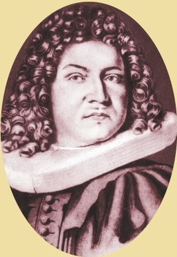
瑞士数学家雅克布·伯努利于1683年计算出e的第一个近似值。
2.71828182845904523536028747135266249775724709369995…
这是数e——下面空白处我们写下了它的前一部分。e是一个无理数，即为无限不循环小数。
数学常数
如同数π和Φ一样，e也是一个数学常数。这是与自然界相关联，永恒不变的数，但它也在数学世界中拥有完全的鲜活生命。e是一个无理数，这意味着我们永远都不能完整地写出它的整个小数形式——它的小数部分不断往后延续，没有终结（见第 40 页）。除此之外，e还是一个超越数，也就是说它不可能简化为任何整系数代数方程的根（见第148 页）。因此，我们只能尝试着去寻找方法以更精确地计算一下这个数e。得益于计算机技术的发展，我们已经能够计算出e的小数点后10亿位。但是，这仍仅仅是个开始！以后我们可以说e大概是2.718 281 82…。
增长与衰减
虽然很难去计算e的值，但它适用于现实生活中很多的场景。这是因为e表达了增长率与现有量成比例变化的过程。换言之，现有增长率取决于现有量。在持续增长之下，现有量增加，同时，增长率也增加。这就是指数增长，这种增长方式常见于许多自然现象之中：放射性物质的衰变，细菌的生长，螺旋纹贝壳其纹路向外延展的方式（见第84页）。这些现象均与数e息息相关。另一个非自然界的关联是银行里“利滚利”的利息计算方式，也是依赖于数e，而这也正是数学家第一次意识到这个数。
利息计算
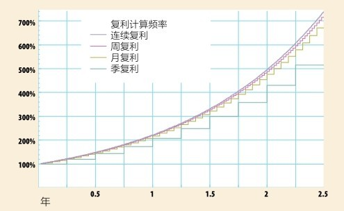
数e最早用于复利计算。复利问题中，每隔一个固定的时间段把利息加入本金作为下一轮新的本金，收益滚动增长。如果年利率是100%，一年后的收益将把本金翻番。
如果缩短时间尺度，减小利率，提高复利计算的频率，一年后的收益将更多。不断缩小时间尺度，最终得到连续复利，此时，收益随时间的增长比率是数e，即2.71828…。
数e掠影
首先我们介绍一下数e。我们计算数e最简洁的方式是利用数学式(1+1/x)x。此式中的x可以为任何你想要的数字，而我们已经知道当x趋近于正无穷大时，上述数学式接近于数e。事实上，当x等于1时，上述式子的值为(1+1/x)x=2。当x等于10时，上述式子的值为(1+1/x)x=2.593 74…；当x等于100 000时，上述式子的值为(1+1/x)x=2.718 26…。当x取值更大，更接近正无穷大时，比如说令x等于1000万，则上述式子的值将为(1+1/x)x=2.718 28…。当x取值大于1000万时，上述式子的值（保留到小数点后的前5位）将始终是2.718 28。当然，随着x取值的增加，由上述式子计算得到的数值，从其小数点后第6位开始，小数部分不断变化，而且越来越接近数e。
大自然之子
人们对数e的最初发现是在1618年，隐藏于约翰·纳皮尔关于对数的一本著作的背面（关于对数的内容，见第98页）。对数运算（简记为log）是在特定基数下把数对应于这个基数下的指数（见第98页）。这种运算大大降低了大数计算的难度。纳皮尔在这方面最初的工作涉及被称为自然对数的运算，即基数为e的对数运算。让我们简单回顾一下一般的对数运算（如以10为底）：我们知道因为101=10，所以log1010=1；而102=100，所以log10100=2；也因为100=1，所以log101=0。同样的思路也适用于自然对数。自然对数常记作lnx，但有时只是简单地按照寻常的方式，记作logex。因为e0=1，所以loge1=0，类推， logee=1。至此可见，它们如此相似，那么，数e又是从何而来的呢？
美国密苏里州圣路易斯大拱门是一根倒置的悬链线的形状，其解析方程需要用数e表达。
莱昂哈德·欧拉于18世纪20年代开始用字母e记这个无理数。如今，这个数亦被称为欧拉常数。
指数函数曲线
如果你描绘一条以自然方式增长的量的图像曲线，你会发现这条线起初非常平坦，之后越来越陡，直到最后几乎垂直，趋于正无穷。对数运算把这条曲线变换到一条直线（更易于理解），而e正是我们在自然界寻觅的能拉直这条曲线的数。关于数e的最早计算始于1683年雅克布·伯努利对复利增长曲线的研究（见第139页的图）。然而，最终是莱昂哈德·欧拉于18世纪20年代后期通过计算自然对数的底数，把数e与各种各样的曲线联系了起来。
数学奇迹
e被广泛应用于从几何、数论到概率各个数学领域。让我们再看一个关于方根的趣事。数x的平方根
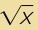
是一个数，它的平方恰为x。数x的3次方根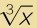
是另一个数，它的3次方恰为x。而x的x次方根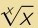
，它的x次方才是x——注意，这里的x指同一个数。因此，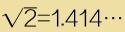
，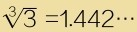
；同样，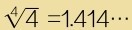
，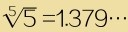
；而且，至此之后，这些数单调递减趋于1，但是，始终达不到1。由此，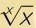
最可能的值是多少呢？嗯，你猜对了，就是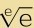
，它的小数表达是1.444 66…。参见：
▶超越数，第148页
谷歌公司与数e
谷歌公司由几位数学家创建。（数学家能成立公司创业，这也是数学课堂上老师教育学生勤奋努力学习的范例之一。）2004年，谷歌公司公开上市开始出售股票，首笔的报价为2 718 281 828美元——也就是说，e×10亿美元。